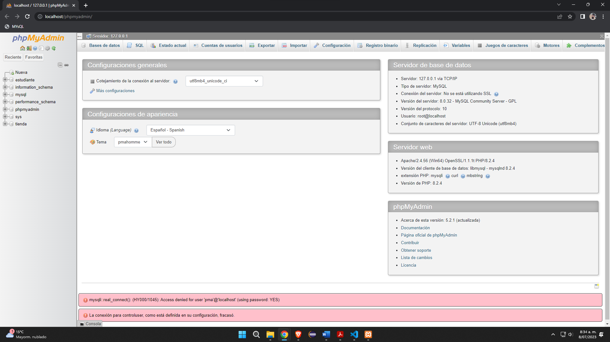

Quinto Punto
Base de Datos
phpMyAdmin Inicial

Creamos la base (mi_proyecto)
Se ve la creación de la base
Importamos la base que se dejo en el material de clase
Se importa correctamente
Se ven los datos importados
Inserto mi nombre al final de la base